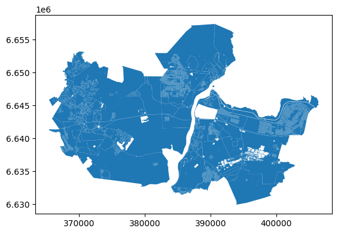

[1]:
import os
import geopandas as gpd
data_path = "./"
[2]:
boundaries_gdf = gpd.read_parquet(os.path.join(data_path, "boundaries.parquet"))
crs = boundaries_gdf.estimate_utm_crs()
boundaries_gdf = boundaries_gdf.to_crs(crs)
Processing geometries
[3]:
roads_gdf = gpd.read_parquet(os.path.join(data_path, "roads.parquet")).to_crs(crs)
# railways_gdf = gpd.read_parquet(os.path.join(data_path, "railways.parquet")).to_crs(crs)
water_gdf = gpd.read_parquet(os.path.join(data_path, "water.parquet")).to_crs(crs)
[4]:
from blocksnet.blocks.cutting import preprocess_urban_objects
lines_gdf, polygons_gdf = preprocess_urban_objects(roads_gdf.to_crs(32636), None, water_gdf)
2025-09-15 01:43:01.174 | INFO | blocksnet.blocks.cutting.preprocessing.core:preprocess_urban_objects:44 - Checking roads schema
2025-09-15 01:43:01.191 | INFO | blocksnet.blocks.cutting.preprocessing.core:preprocess_urban_objects:51 - Checking railways schema
2025-09-15 01:43:01.192 | WARNING | blocksnet.blocks.cutting.preprocessing.core:preprocess_urban_objects:53 - Creating empty railways
2025-09-15 01:43:01.195 | INFO | blocksnet.blocks.cutting.preprocessing.core:preprocess_urban_objects:58 - Checking water schema
Cut urban blocks
[16]:
from blocksnet.blocks.cutting import cut_urban_blocks
blocks_gdf = cut_urban_blocks(boundaries_gdf, lines_gdf, polygons_gdf)
2025-09-15 01:49:48.898 | INFO | blocksnet.blocks.cutting.processing.schemas:validate_and_preprocess_gdfs:45 - Checking boundaries schema
2025-09-15 01:49:48.909 | INFO | blocksnet.blocks.cutting.processing.schemas:validate_and_preprocess_gdfs:49 - Checking line objects schema
2025-09-15 01:49:48.934 | INFO | blocksnet.blocks.cutting.processing.schemas:validate_and_preprocess_gdfs:56 - Checking polygon objects schema
2025-09-15 01:49:48.948 | INFO | blocksnet.blocks.cutting.processing.schemas:validate_and_preprocess_gdfs:63 - Checking buildings schema
2025-09-15 01:49:48.948 | WARNING | blocksnet.blocks.cutting.processing.schemas:validate_and_preprocess_gdfs:65 - Creating empty buildings
2025-09-15 01:49:52.614 | SUCCESS | blocksnet.blocks.cutting.processing.core:cut_urban_blocks:24 - 3420 blocks are successfully cut
[17]:
blocks_gdf.plot()
[17]:
<Axes: >
[7]:
len(blocks_gdf)
[7]:
3420
Cut with splitting
[8]:
from blocksnet.blocks.classification import BlocksClassifier
classifier = BlocksClassifier.default()
buildings_gdf = gpd.read_parquet('buildings.parquet').reset_index()
[9]:
from blocksnet.blocks.cutting import cut_urban_blocks
blocks_gdf = cut_urban_blocks(boundaries_gdf, lines_gdf, polygons_gdf, buildings_gdf, classifier)
2025-09-15 01:43:05.724 | INFO | blocksnet.blocks.cutting.processing.schemas:validate_and_preprocess_gdfs:45 - Checking boundaries schema
2025-09-15 01:43:05.732 | INFO | blocksnet.blocks.cutting.processing.schemas:validate_and_preprocess_gdfs:49 - Checking line objects schema
2025-09-15 01:43:05.754 | INFO | blocksnet.blocks.cutting.processing.schemas:validate_and_preprocess_gdfs:56 - Checking polygon objects schema
2025-09-15 01:43:05.769 | INFO | blocksnet.blocks.cutting.processing.schemas:validate_and_preprocess_gdfs:63 - Checking buildings schema
2025-09-15 01:43:09.782 | SUCCESS | blocksnet.blocks.cutting.processing.core:cut_urban_blocks:24 - 3420 blocks are successfully cut
2025-09-15 01:43:09.838 | INFO | blocksnet.preprocessing.feature_engineering.core:_calculate_usual_features:35 - Calculating usual features
2025-09-15 01:43:09.861 | INFO | blocksnet.preprocessing.feature_engineering.core:_calculate_radiuses:46 - Calculating radiuses
100%|██████████| 1296/1296 [00:00<00:00, 2462.98it/s]
100%|██████████| 1296/1296 [00:01<00:00, 1020.31it/s]
2025-09-15 01:43:11.665 | INFO | blocksnet.preprocessing.feature_engineering.core:_calculate_aspect_ratios:58 - Calculating aspect ratios
100%|██████████| 1296/1296 [00:00<00:00, 30243.35it/s]
2025-09-15 01:43:11.711 | INFO | blocksnet.preprocessing.feature_engineering.core:_calculate_centerlines:21 - Calculating centerlines
100%|██████████| 1296/1296 [00:05<00:00, 245.57it/s]
2025-09-15 01:43:17.276 | WARNING | blocksnet.machine_learning.strategy.torch.tensor.supervised.classification.base_strategy:predict:52 - One should provide criterion_cls. Using CrossEntropyLoss by default.
2025-09-15 01:43:17.280 | WARNING | blocksnet.machine_learning.strategy.torch.tensor.supervised.classification.base_strategy:predict_proba:66 - One should provide criterion_cls. Using CrossEntropyLoss by default.
2025-09-15 01:43:17.284 | INFO | blocksnet.blocks.cutting.processing.split:split_blocks:92 - 44 candidates were found for splitting
100%|██████████| 44/44 [03:13<00:00, 4.39s/it]
2025-09-15 01:46:30.547 | INFO | blocksnet.blocks.cutting.processing.split:split_blocks:109 - 44 blocks are successfully splitted into 323 blocks
2025-09-15 01:46:30.550 | SUCCESS | blocksnet.blocks.cutting.processing.split:split_blocks:114 - 3699 blocks overall
[12]:
blocks_gdf.plot()
[12]:
<Axes: >

[13]:
len(blocks_gdf)
[13]:
3699